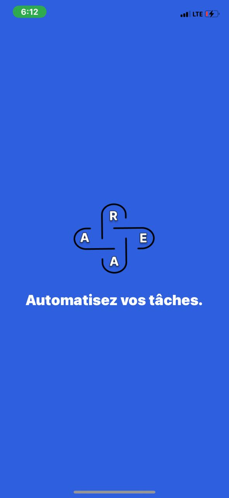
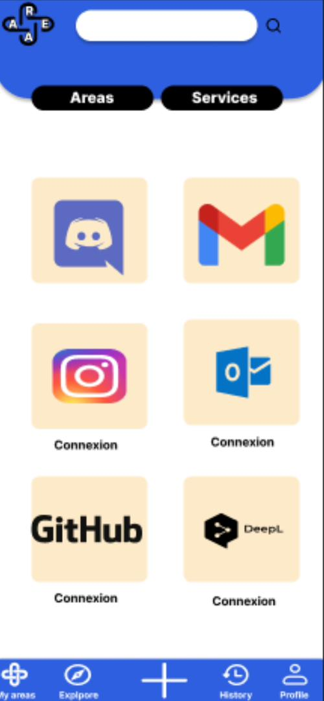
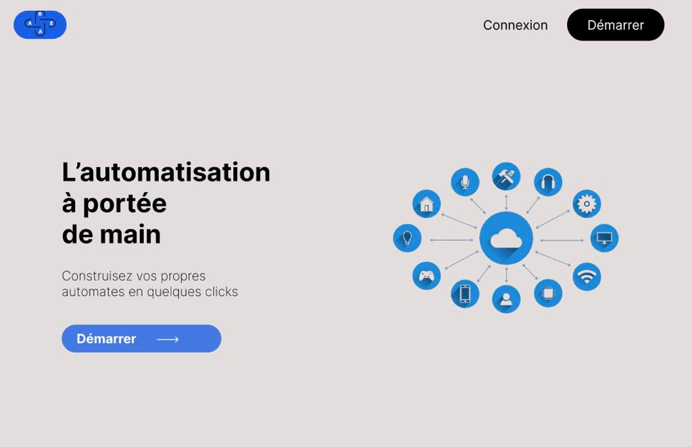
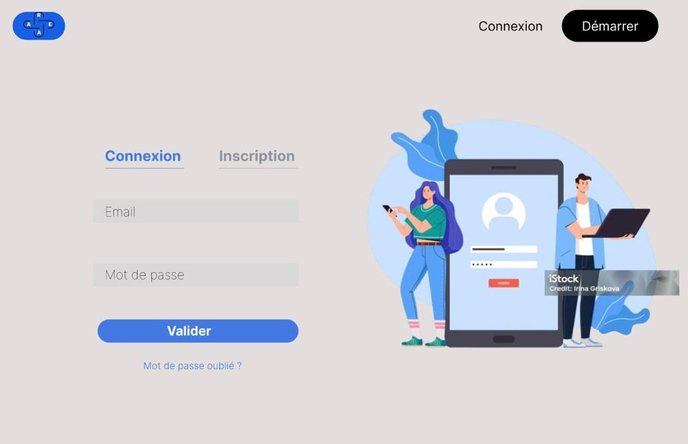
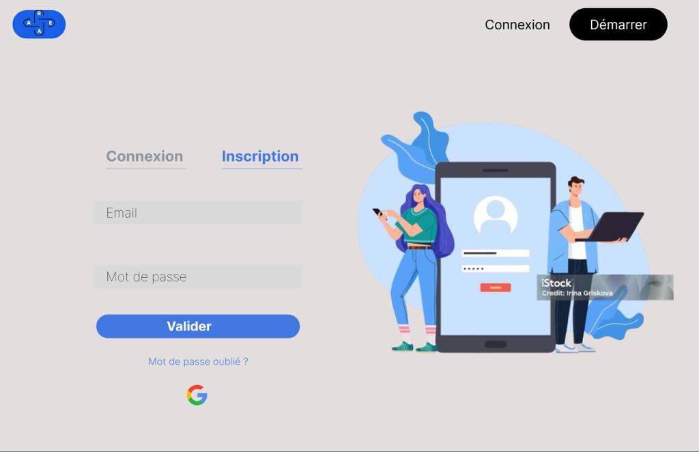
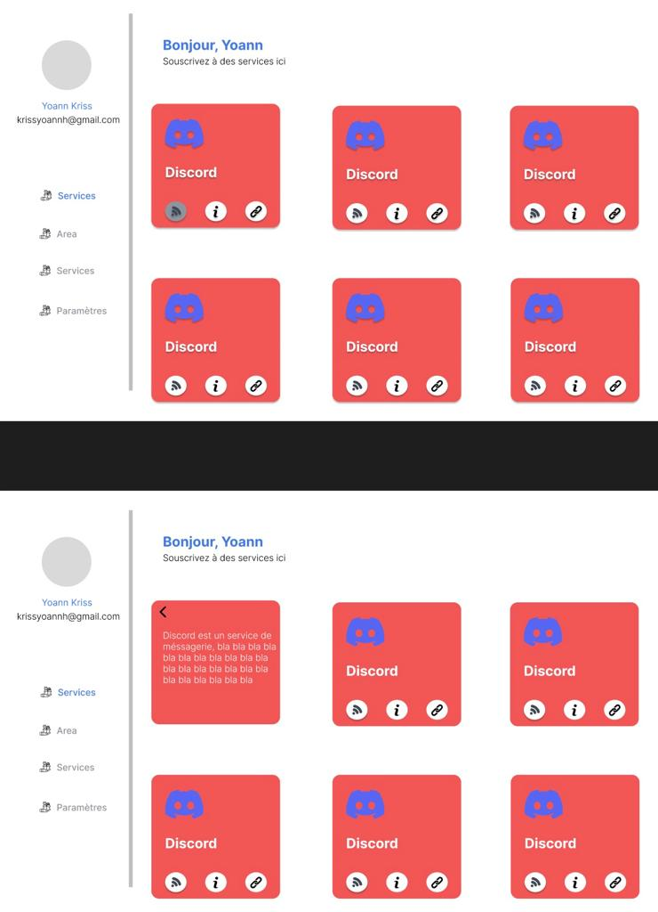

AREA
Project overview:
The project aims to create a software suite similar to IFTTT and/or Zapier, allowing users to interconnect various digital services.
This software suite is divided into 3 parts:
- A Server: Implements features and exposes functionalities through a REST API.
- Web Client: Enables users to interact with the application via a web browser.
- Mobile Client: Allows users to access the application through a mobile device.
Languages:
This project uses the following languages:
- Server → Nodejs Express & MongoDB.
- Web application → React.
- Mobile application → React Native.


Documentation:
In the AREA_Documentation/ folder you can find these documents:
- User's guide → How to use the application.
- Technical documentation → Technical information about the project.
Achievement:
Mobile app:




Web app:




Services:
Here are all the different services that you can use:
- GitHub
- Gitlab
- Gmail
- Discord
- OneDrive
- Youtube
Made by:
- Jean-David BAMENOU [jean-david.bamenou@epitech.euepitech]
- Sedjro HOUNDONOUGBO [sedjro.houndonougbo@epitech.eu]
- Togni AKPO [togni.akpo@epitech.eu]
- Olouwachegoun BADOU [olouwachegoun.badou@epitech.eu]
- Loick MIAN [loick.mian@epitech.eu]
- Maria Gracia AHOMLANTO [maria-gracia.ahomlanto@epitech.eu]